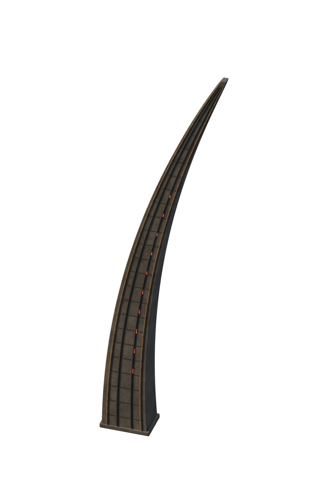
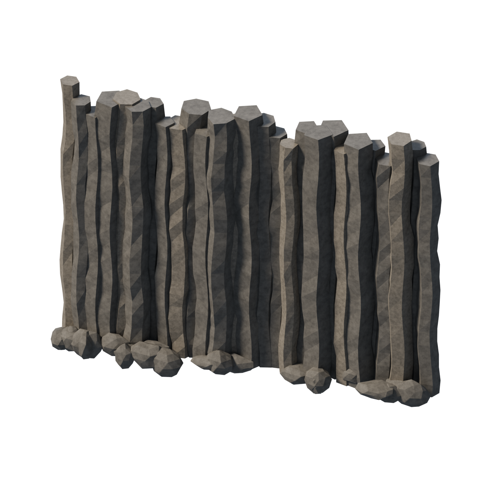
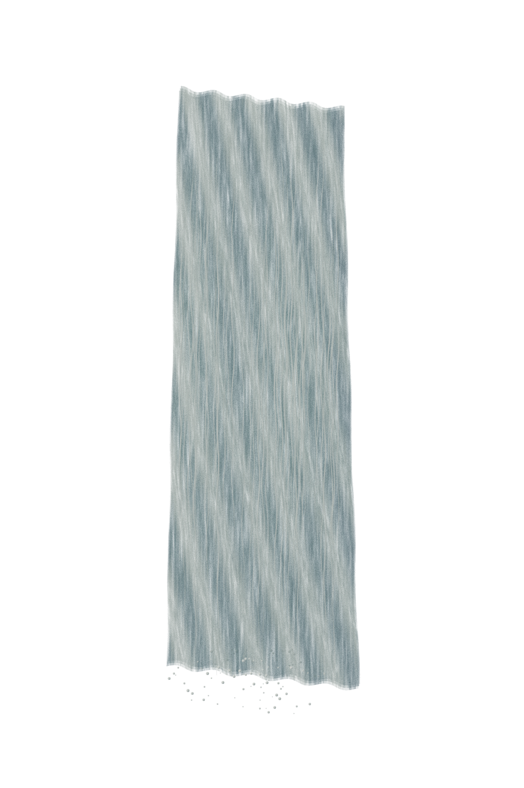
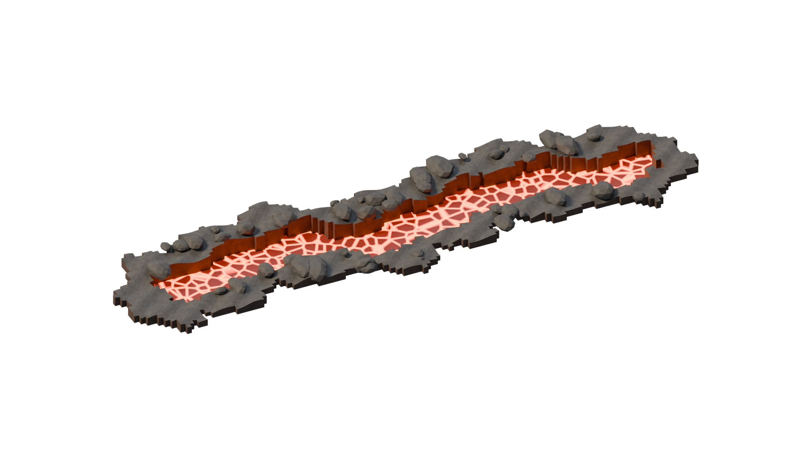
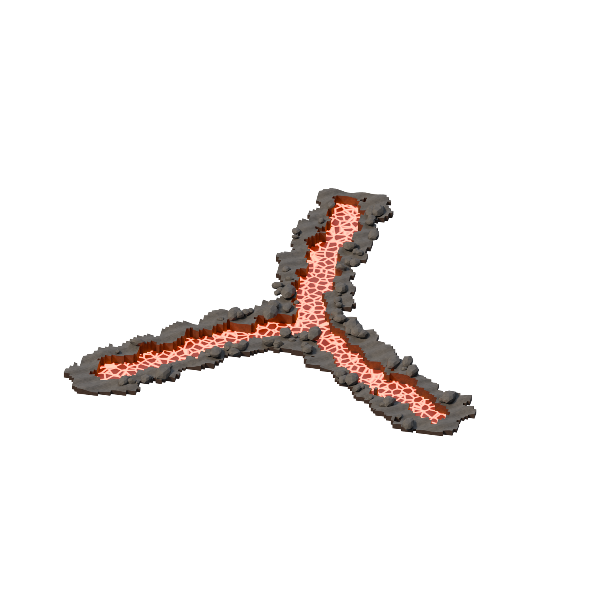
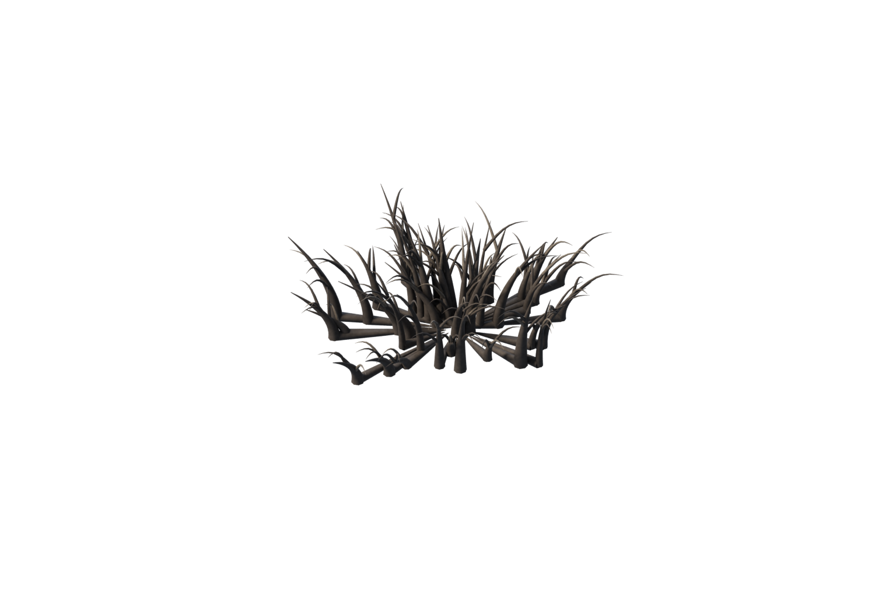
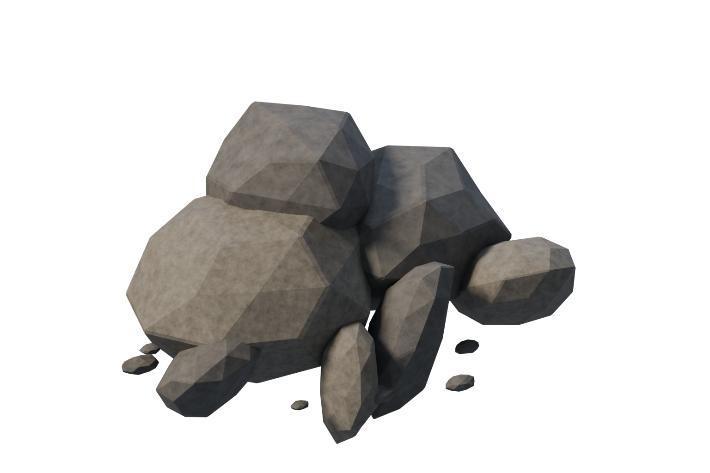

Homeworld — V162
Sept modules indépendants rendus à partir de géométries métriques originales. Les mesures sont des conventions de travail, pas des valeurs officielles. Aucun de ces prototypes n’est certifié 1:1 ni intégré au gameplay.
La végétation du premier plan n’est pas identifiée comme une espèce canonique. Les anciennes planches non conformes ne sont pas des livrables.
Contrefort courbe de tour

HWA160-N04 · 1024 × 1536 px · prototype non admis
Paroi de falaise volcanique

HWA160-N05 · 1536 × 1536 px · prototype non admis
Chute d’eau indépendante

HWA160-N06 · 1024 × 1536 px · prototype non admis
Crevasse naturelle étroite

HWA160-N07 · 1920 × 1080 px · prototype non admis
Crevasse naturelle ramifiée

HWA160-N08 · 1536 × 1536 px · prototype non admis
Massif sombre du premier plan

HWA160-N09 · 1536 × 1024 px · prototype non admis
Amas de basalte fracturé

HWA160-N10 · 1536 × 1024 px · prototype non admis